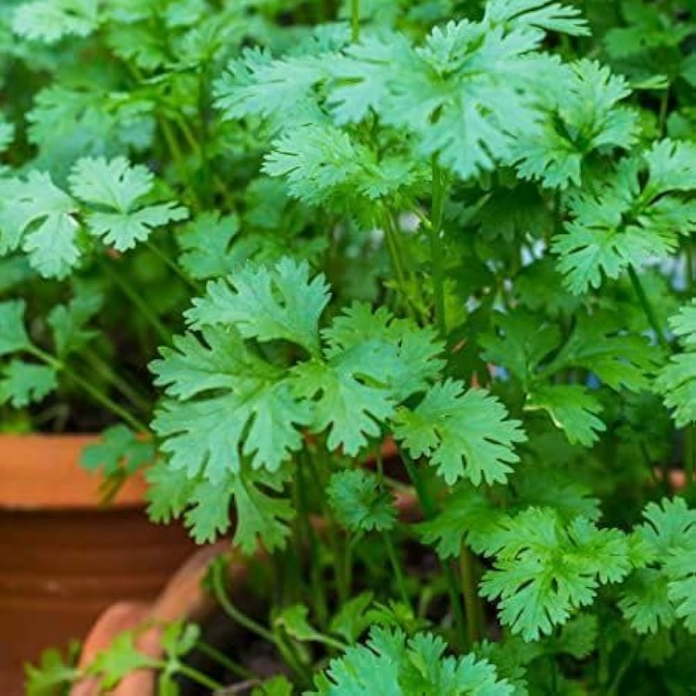

Family: Apiaceae
Genus: Coriandrum
Species: C. sativum
Native to Southern Europe and North Africa and cultivated widely across India, Asia, and Latin America.
Grows best in cool to moderate climates and prefers mild temperatures for optimal leaf growth.
Supports digestion, reduces bloating, helps manage cholesterol levels, and acts as a natural detoxifier.
Used in traditional remedies for indigestion, joint pain, appetite loss, and mild infections.
Rich in vitamins A, C, and K, along with antioxidants that support overall health.